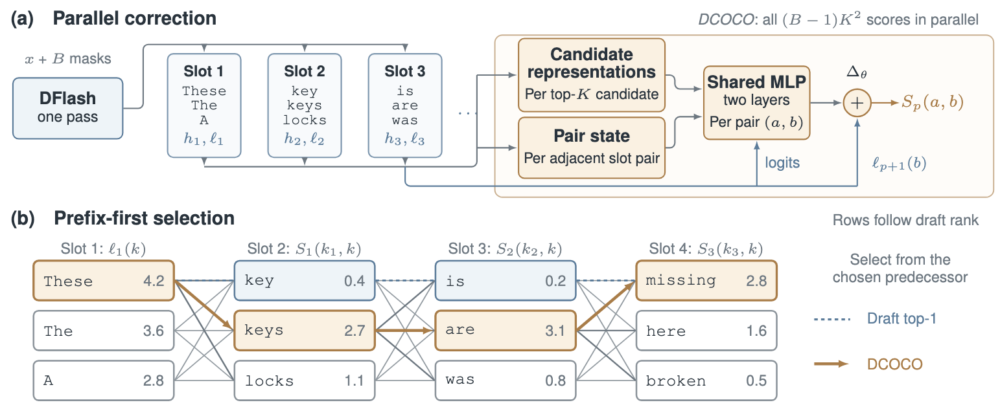
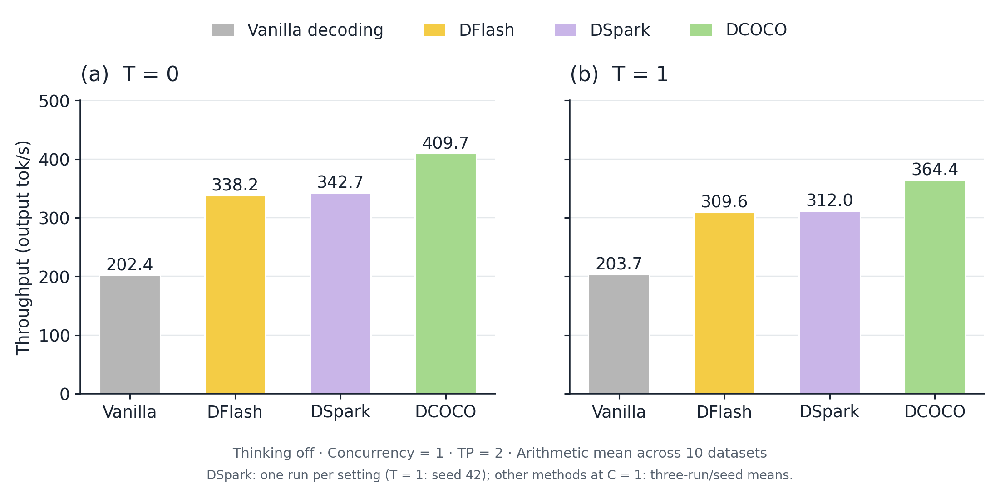
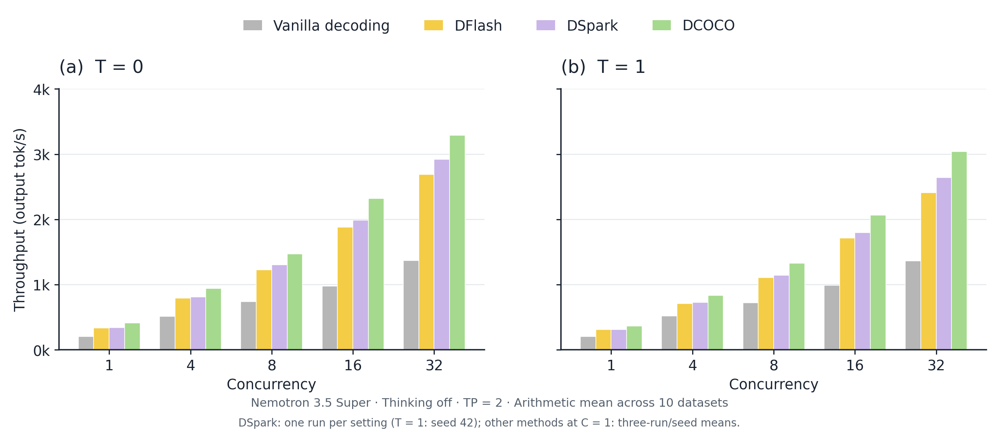
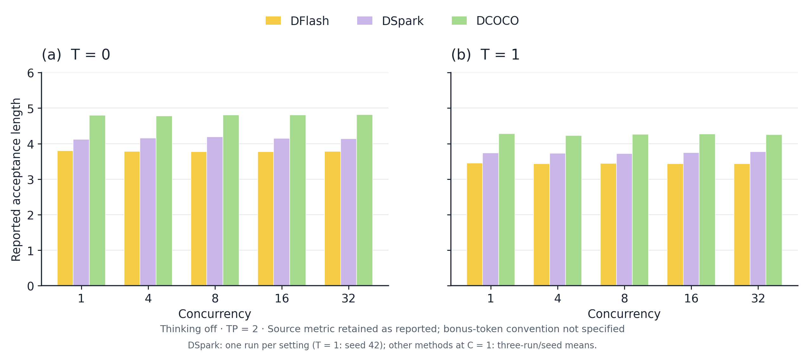

Through our collaboration with NVIDIA, we gained early access to Nemotron 3.5 Super VL to optimize its inference with DCOCO, our speculative decoding method. The goal is straightforward: deliver the same model quality with faster responses.
Nemotron 3.5 Super VL is an open, customizable model combining agentic reasoning, tool use, and multimodal understanding for specialized workflows in long-running enterprise agents.
Speculative decoding lets a small, fast drafter propose several tokens that the larger model verifies in a single pass. When multiple tokens are accepted, generation accelerates while preserving the target model’s output distribution.
The challenge is getting more of those proposals accepted. A drafter often has the right token among its leading candidates but chooses a combination that the target model rejects. DCOCO improves those choices by combining token embeddings with contextual signals from hidden states informed by the target model’s activations. It scores candidate combinations in parallel and conditions each subsequent choice on the actual token selected.
By improving the drafter’s proposals, DCOCO helps Nemotron 3.5 Super accept more tokens per verification pass, delivering more output from each pass while retaining the target model’s quality.
Faster inference starts with better drafts
To make Nemotron 3.5 Super faster, we need it to accept more tokens in each verification pass without spending the saved time on drafting.
Parallel drafters such as DFlash generate an entire block in one pass. That makes drafting fast, but each position predicts from the existing context without knowing which tokens will be selected elsewhere in the block. Individually plausible predictions can form an inconsistent sequence.
Consider “These key is missing.” Each choice might make sense on its own, but the words don’t fit together. DCOCO accounts for the selected tokens: “These” favors “keys,” and “keys” then favors “are,” producing “These keys are missing.”
This consistency matters because verification accepts only the tokens before the first rejection. Improving an early choice can allow more of the block to pass, increasing the amount of text Nemotron generates per verification step. The correction must also stay cheap enough to deliver a net speedup.
How DCOCO works
DCOCO stands for DFlash Contextual Corrector. It sits between the parallel drafter and the target’s verification step.
Keep the leading candidates
DCOCO retains the top-$K$ candidates at each of the $B$ draft positions. Let $c_{i,k}$ denote candidate $k$ at position $i$, $h_i$ the drafter’s hidden state, and $\ell_i(k)$ its original logit, or score before normalization. In the example (Figures 1 and 2), a position might retain candidates “key,” “keys,” and “locks.”
This gives the corrector alternatives to choose from. Correction is limited to that shortlist: if the desired token is absent, DCOCO cannot select it.
Score neighboring candidates in parallel
The correction is grounded in both which tokens are being considered and what the model knows about the context. DCOCO looks up each candidate’s embedding $\mathrm{Emb}(c_{i,k})$ in the frozen token-embedding table. This gives it an explicit representation of that candidate’s identity. It combines the embedding with the position’s hidden state $h_i$ from DFlash, whose predictions are conditioned on target-model activations from the existing prefix.
These signals are projected into a compact space, normalized, and fused into a candidate representation $z_{i,k}$ via function $f$. In shorthand:
The embedding tells the corrector which candidate it is evaluating; the hidden state provides contextual information for that position. DCOCO also combines the hidden states of each neighboring pair of positions into $s_p$, a shared context representation reused across all candidate pairs at those positions.
A small shared feed-forward network, $\Delta_\theta$, uses both candidates’ fused representations, the shared pair context, and the original draft logits to compute a correction. For candidate $a$ at position $p$ and candidate $b$ at position $p+1$, the corrected transition score is:
The first term, $\ell_{p+1}(b)$, is the draft unary logit: the drafter’s original score for the later candidate. The second term, $\Delta_\theta$, is the learned correction. Through $z_{p,a}$ and $z_{p+1,b}$, it sees the embeddings of both candidate tokens together with their position-specific context; $s_p$ supplies their shared pair context. These inputs let it learn how the score for $b$ should change when $a$ is the predecessor in this particular context.
For example, the embedding of “These” provides an explicit signal that can raise the score of “keys” relative to “key,” while the hidden states ground that adjustment in the surrounding text. DCOCO evaluates each candidate pair with both token identity and context available.
Each neighboring pair of positions has $K^2$ candidate combinations. DCOCO computes all $(B-1)K^2$ transition scores together, reusing information from the existing DFlash pass. The corrector adds no attention layer and requires no additional drafter pass.
Select using the realized token identities
Once the scores are ready, DCOCO selects tokens from left to right. It keeps the drafter’s first choice at the first position. At each following position, it chooses the highest-scoring candidate given the token actually selected immediately before it:
Here, $k_p$ is the selected candidate index at position $p$; the proposed token is $c_{p,k_p}$. Each step reads the scores associated with that selected predecessor.
For the illustrative draft, this can turn “These key is missing” into “These keys are missing.”
All possible predecessor identities have already been represented through their embeddings during parallel scoring. Once a token is selected, its realized identity determines which precomputed scores are used at the next position. Only this short lookup-and-selection step is sequential; the neural computation has already finished.
The selection rule also reflects how verification works. It prioritizes the next token in the prefix, since later tokens are useful only if the earlier ones are accepted.

How we train the corrector
DCOCO trains the drafter and corrector together using supervision from the target model. The drafter retains its original training objective. The corrector learns to favor candidate pairs matching the target’s preferred tokens under the training context.
Training gives greater weight to earlier positions, where a rejection would invalidate more of the proposed block. Pairs whose target tokens are missing from the candidate lists are excluded from the correction loss.
The corrector initially makes no adjustment: $\Delta_\theta = 0$, so $S_p(a, b) = \ell_{p+1}(b)$. Selection therefore reproduces DFlash’s original choices at initialization. Training then teaches the corrector when to change those choices. The token embeddings remain frozen.
Results on NVIDIA Nemotron 3.5 Super
In collaboration with NVIDIA, we trained DCOCO for Nemotron 3.5 Super. We compare vanilla autoregressive decoding, DFlash, DSpark, and DCOCO on ten datasets at temperatures $T = 0$ and $T = 1$. $T = 0$ uses greedy decoding; $T = 1$ uses stochastic decoding.
The reported runs use serving concurrencies $C = 1$, 4, 8, 16, and 32. All speculative methods use the $k = 15$ setting from the evaluation tables. Evaluation is performed on NVIDIA DGX B200, using the vLLM framework.
The target remains responsible for verification. With the appropriate speculative verification rule, greedy decoding preserves the target’s token choices, and stochastic decoding preserves its output distribution.
End-to-end throughput
We evaluate Nemotron 3.5 Super on ten datasets spanning math, code, and general-purpose generation. The detailed breakdown below covers greedy decoding ($T = 0$) with thinking disabled. A separate summary reports averages across the same ten datasets for each of the four thinking and temperature configurations.
Both tables report output throughput in tokens per second at concurrency $C = 1$ and tensor parallelism TP = 2, with speedup over vanilla decoding in parentheses. At $C = 1$, vanilla, DFlash, DSpark, and DCOCO average three runs at $T = 0$ and three seeds (42, 43, and 44) at $T = 1$.
| Category | Dataset | Vanilla decoding | DFlash | DSpark | DCOCO |
|---|---|---|---|---|---|
| Math | MATH-500 | 205.597 | 405.543 (1.97×) | 417.680 (2.03×) | 504.653 (2.45×) |
| Math | AIME-25 | 208.665 | 430.138 (2.06×) | 434.105 (2.08×) | 550.280 (2.64×) |
| Math | GSM8K | 194.647 | 383.811 (1.97×) | 397.688 (2.04×) | 477.271 (2.45×) |
| Code | HumanEval | 201.209 | 417.130 (2.07×) | 435.895 (2.17×) | 528.126 (2.62×) |
| Code | MBPP | 183.073 | 379.781 (2.07×) | 389.463 (2.13×) | 459.751 (2.51×) |
| Code | LiveCodeBench | 206.277 | 376.635 (1.83×) | 383.081 (1.86×) | 459.069 (2.23×) |
| General | MT-Bench | 207.044 | 262.870 (1.27×) | 254.048 (1.23×) | 293.776 (1.42×) |
| General | Arena-Hard-v2 | 209.235 | 225.824 (1.08×) | 217.973 (1.04×) | 250.772 (1.20×) |
| General | Alpaca | 207.526 | 234.661 (1.13×) | 231.076 (1.11×) | 262.204 (1.26×) |
| General | SpeedBench | 200.534 | 265.135 (1.32×) | 266.404 (1.33×) | 310.982 (1.55×) |
| All | Average | 202.381 | 338.153 (1.68×) | 342.741 (1.70×) | 409.688 (2.03×) |
| Thinking | Temperature | Vanilla decoding | DFlash | DSpark | DCOCO |
|---|---|---|---|---|---|
| Off | $T = 0$ | 202.381 | 338.153 (1.68×) | 342.741 (1.70×) | 409.688 (2.03×) |
| Off | $T = 1$ | 203.679 | 309.649 (1.52×) | 311.967 (1.54×) | 364.405 (1.79×) |
| On | $T = 0$ | 213.041 | 342.809 (1.61×) | 351.878 (1.66×) | 411.630 (1.94×) |
| On | $T = 1$ | 215.328 | 313.490 (1.46×) | 320.575 (1.49×) | 365.163 (1.70×) |
How we compute speedups. For each dataset and configuration, speedup is computed against the corresponding vanilla baseline before averaging:
We also report the incremental gain over DFlash:

With thinking disabled and one request at a time, DCOCO is faster than both vanilla decoding and DFlash on all ten datasets at both temperatures. Its mean per-dataset speedup over vanilla decoding is 2.03× at $T = 0$ and 1.79× at $T = 1$. Relative to DFlash, the mean per-dataset throughput gain is 19.8% and 16.7%, respectively.
Scaling to higher concurrency
To test how the gains carry over to serving multiple requests, we increase concurrency from 1 to 4, 8, 16, and 32 with thinking disabled and tensor parallelism TP = 2. We evaluate both $T = 0$ and $T = 1$ on the same ten datasets, comparing total output throughput at each serving load.
DCOCO maintains higher throughput than DFlash on every dataset at every tested concurrency and temperature. Across $C = 4\text{–}32$, its mean per-dataset gain over DFlash ranges from 17.8% to 22.2% at $T = 0$ and from 16.6% to 24.3% at $T = 1$. At $C = 32$, DCOCO reaches mean throughput of 3,285.679 tok/s at $T = 0$ and 3,036.602 tok/s at $T = 1$, with mean per-dataset speedups over vanilla decoding of 2.44× and 2.25×, respectively.
DCOCO also maintains higher average throughput than DSpark at every tested concurrency and temperature. Across $C = 4\text{–}32$, its mean per-dataset gain over DSpark ranges from 12.7% to 16.3% at $T = 0$ and from 13.7% to 15.7% at $T = 1$.
These results show that DCOCO’s throughput benefit over DFlash persists as serving concurrency increases. Average DCOCO throughput exceeds vanilla decoding, DFlash, and DSpark at every tested concurrency in both temperature settings.

Draft acceptance
With thinking disabled, DCOCO has higher reported acceptance length than both DFlash and DSpark on every dataset at every measured concurrency and temperature. At $C = 1$ and $T = 0$, the means are 3.80 for DFlash, 4.12 for DSpark, and 4.80 for DCOCO. At $T = 1$, they are 3.45, 3.74, and 4.28, respectively. Across $C = 1\text{–}32$, DCOCO’s mean stays between 4.78 and 4.82 at $T = 0$ and between 4.23 and 4.28 at $T = 1$.

DCOCO combines higher reported acceptance with higher average end-to-end throughput than both DFlash and DSpark at every measured serving load and temperature.
Conclusion
DCOCO makes Nemotron 3.5 Super even faster while preserving its output quality. By improving draft acceptance through parallel correction, with no additional drafter pass, it delivers higher throughput than DFlash across the datasets, temperatures, and concurrency levels we tested in our collaboration with NVIDIA. More tokens accepted per pass means faster generation from the same model.
The method, ablations and results on Qwen3 and Llama verifiers are in the paper, arxiv.org/abs/2610.12570, and on the DCOCO project page.